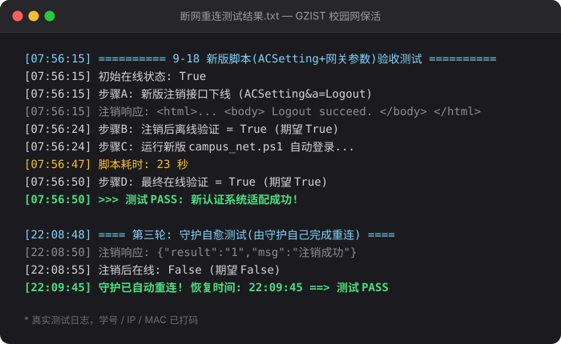

把下载的 ZIP 解压到一个固定文件夹（例如 D:\GZIST-NetKeeper\），双击 重新配置账号.bat，输入学号和校园网密码（输密码时屏幕上不显示，正常输入后回车即可）。
先手动注销校园网（浏览器打开 10.0.10.252 点注销），再双击 校园网登录.bat。看到绿色的「登录成功」就说明配置正确。
双击 安装开机自启.bat。之后每次登录 Windows 会自动在后台启动保活守护，重启、休眠唤醒后掉线也会自动重连（通常半分钟内恢复上网）。装完无需重启，立刻生效。

上图为本项目 2026-09-18 的真实测试日志（学号、IP、MAC 已隐去）。
学校的认证服务器（10.0.10.252）在电脑重启、休眠唤醒、WiFi 重连后会删除登录会话，所以每次都要重新打开网页输账号密码。这个工具会在后台默默检查网络：一旦发现掉线，就自动向认证服务器发送登录请求，全程无需你操作。
原理：调用学校认证系统的 eportal 新版接口（ACSetting&a=Login），自动检测本机 IP 和 MAC 地址并携带账号密码完成认证，并紧跟网关 302 跳转携带权威参数。旧的 Portal&a=login 接口在 2026-09 学校升级后已全部返回 500，本项目已适配。
| 文件 | 作用 |
|---|---|
| 重新配置账号.bat | 首次使用 / 改密码时运行，重新填写学号密码 |
| 校园网登录.bat | 手动登录一次（带窗口，能看结果），测试用 |
| 安装开机自启.bat | 设置开机自动后台保活（计划任务方式，无需管理员权限），并立即启动守护，推荐 |
| 启动后台保活.bat | 临时手动启动一次后台守护（已运行时会自动跳过，不会重复启动） |
| 卸载开机自启.bat | 取消开机自启并结束守护进程 |
| 诊断检测.bat | 一键诊断：在线状态、配置、保活是否在运行、开机自启指向（出问题先跑这个） |
| 注销测试.bat | 一键注销校园网（调认证服务器接口），用来验证自动重连效果 |
| campus_net.ps1 | 核心脚本（自动改密码不用动它） |
| campusnet_log.txt | 运行日志（自动生成，出问题先看它） |
| campusnet_config.json | 保存你的账号密码（自动生成） |
另有 install_autostart.ps1、logout.ps1、silent_start.vbs 三个内部脚本，由 bat 自动调用，不需要手动运行。
| 现象 | 解决办法 |
|---|---|
| 登录失败 ret_code=8 | 先在手机或其他设备上打开 10.0.10.252 点「注销」把本机下线；再按 Win+R 输入 cmd，依次执行 ipconfig /release 和 ipconfig /renew，然后重新运行登录 |
| 登录失败 ret_code=2 | 账号在别处登录了，先把其他设备下线 |
| 提示未检测到网卡 | 先插网线或连上校园网 WiFi，再运行脚本 |
| 改了校园网密码 | 双击 重新配置账号.bat 重新填一次 |
| 开着 VPN（尤其 TUN 模式）时检测不准、掉线后不自动重连 | VPN 的 TUN 模式会接管系统路由，把发往校园网关的请求也吞进隧道，于是掉线时捕获不到网关的 302 跳转（登录必需的 wlanuserip / wlanusermac / wlanacip 参数就在其中），登录无法完成，在线判断也会失真（可能显示在线其实已掉线）。测试和日常使用请先关闭 VPN，只保留校园网本身的连接 |
| 休眠唤醒后过了一会儿才恢复 | 正常现象。守护每 10 秒检测一次，通常 15~30 秒内恢复；重启 / 休眠唤醒后网卡重新初始化较慢，最多约 1 分钟 |
| 想确认后台在不在运行 | 运行 诊断检测.bat，看第 5 项：显示「运行中」就是真的在跑（用命名互斥锁判断，比看进程列表准）。没在跑就双击 启动后台保活.bat |
| 想改检测间隔 | 编辑 campus_net.ps1 里的 $CheckInterval（单位秒，默认 10）。不建议设得过短 |
| 怎么彻底卸载 | 先运行 卸载开机自启.bat，再删掉整个文件夹即可 |